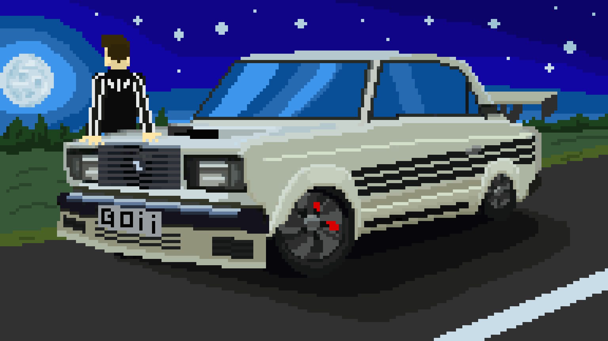

Digital Art
Digital Arts are something to learn for my programming projects. Firstly I created Pixel Art for my Java Projects, then I learned Illustrator and started Creating sprites for my Unity projects. Additionally, I did some standalone works.


Comrade Boris
I used shape outlining techniques in Illustrator to make the detailed 2D design. Had to be more creative with this one because of the quirky nature of this piece.
Size: 1/1 scale
Date: 2020


Cute Girl
This is my first Illustrator project. I used shape outlining techniques to make the detailed 2D design. Suprisengly the hardest part was finding the right color palette.
Size: 16/9 scale
Date: 2020

Slavic Night
This was an intro screen for my final Java project in College (Traffic Simulator). I used pixel art too show a slavic guy looking at the night sky while leaning over his upgraded Lada.
Size: 16/9 scale
Date: 2019

Barrel Boi
Barrel Boi is a fictional character I created. Made with pixel art on the Piskel website.
Size: 640 x 640px
Date: 2019
Concordia Racing Logo
I was asked to do a logo for the Concordia Formula Racing team. So I did. I had ALOT of attempts, some that were meh,
some that turned out very nice. No matter how much I tried the racing team decided to stick with their current logo. But at the end of the day, it was a good experience,
I learned a lot. At least I can share my work and not let it go to waste. The logos are ordered from the 1st attempt to the last.
Date: 2020